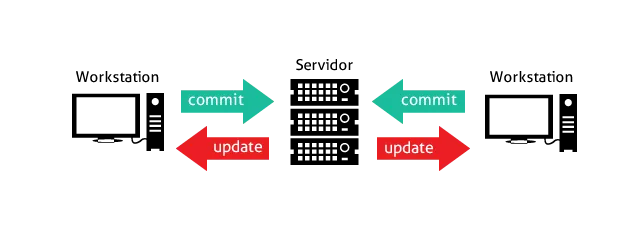
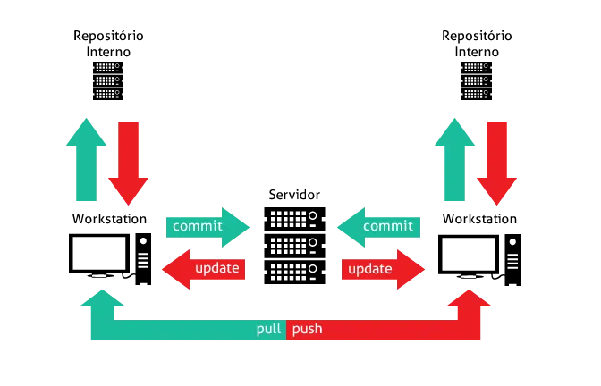

Criação, diferenças do Git e relação com o GitHub
Publicado em 21 de junho de 2024
Começo esse postagem dizendo que Git e GitHub são coisas diferentes. Eles se complementam como dois lados de uma mesma moeda pois o primeiro é um software de controle de versão e o segundo uma plataforma de compartilhamento de códigos/projetos, uma espécie de rede social para programadores.
Passado esse conceito inicial básico para entender melhor esta postagem, podemos adentrar no quesito versionamento, que lida com as versões de um código e de suma importancia para os desenvolvedores por conta de trabalharem com muitas versões de um mesmo código.
A necessidade de se utilizar um programa de controle de versões cresce exponecialmente a medida de mais desenvolvedores estão manipulando os mesmos códigos e arquivos. Este auxilio no controle permite um gerenciamento eficiente e mapeamento de versões.
Apesar do Git ser o mais popular dos gerenciadores de versões ele não foi o primeiro. A criação do primeiro foi em 1972 por Marc Rochkind, chamado de SCCS(Source Code Control System). Ele realizava um versionamentro linear/centralizado num repositório central que comparava as diferenças de cada versão e salvava apenas as diferenças. Nesta época trabalhavam com o conceito de repositório central para que vários usuários tivessem que acessar ele para poder realizar o commmit, ou seja o envio de suas alterações.
Nesse modelo distribuido também temos o conceito de desenvolvimento colaborativo por meio de um repositório remoto a qual cada colaborador pode realizar o push, ou seja o envio de sua versão no repositório local para o repositório remoto.
Ao contrário do modelo centralizado que precisava de um repositório central e todos os usuários tinha que estar conectado a ele, surgiu o modelo distribuido que utilizamos atualmente. No modelo distribuído os desenvolvedores quando vão realizar o commit, isto é, o envio do código trabalho, fazem para um repositório local instalado na própria maquina. Com isso não há necessidade do poder de processamento de servidores ou se quer estar conectado a ele. Após o commit eles podem realizar o push/envio de suas versões para o repositório remoto.
Quando falamos de desenvolvimento de programas, a versão dele é de fundamental importância para o controle das funcionalidades/históricos, permite ramificar o projeto, organiza o trabalho em equipes e traz uma maior segurança.
Linus Torvalds, defesor dos softwares livres, entra nessa história da tecnologia nos anos 2000, na época ele trabalhava no kernel do linux junto com um o Larry McVoy a qual tinha a BitKeeper, um software de versionamento dele. Larry queria ganhar dinheiro com o seu tabalho e por isso tinha duas versões do seu software, uma paga com mais funcionalidade e uma outra versão comunidade com algumas limitações como exemplo metadados não eram disponibilizados para vewrsões de comunidade. Um dos maiores clientes da versão comunidade era o Linus pois tinha o linux disponibilizado pela Bitkeeper.
Devido ao Linux, um software livre utilizar de uma solução proprietária Bitkeeper para realizar a distruição/desenvolvimento de um núcleo livre gerou desagradou em dos grandes nomes do software livre, Richard Stallman, que entrou em contato com Linus para alertar da possibilidade de conflitos de interesse. Linus, ciente da situação mas descrente de que realmente poderia ter algum problema futuro descartou a necessidade de para de utilizar o BitKeeper.
No ano de 2004, Andrew Tridgell, um desenvolvedor relacionado a bandeira de softwares livres criou um programa (SourcePuller, uma espécie de cliente) para a comunidade do Linux utilizar. Por meio de engenharia reversa ele desenvolveu um crack que destravava alguns dos recursos da versão paga. Devido a isso, McVoy e Andrew brigavam e trocavam acusões até que culminou no ano seguinte (2005), o BitKeeper anunciou a sua nova licença de uso. Esta licença cancelava muitos recursos da versão de comunidade e dificultava ainda mais o acesso a metadados como verificar a diferença de informações contida entre versões do código, função essa essencial de qualquer software de versionamento de códigos.
Diante disso Linus Torvalds enfurecido com o descasso de Larry McVoy criou em 10 dias uma versão utilizável do seu próprio de versionamento de códigos no modelo distribuido naquele mesmo ano de 2005 (rumores contam que no quarto dia já estava funcional porem Linus queria terminar de arrumar e polir alguns detalhes). Dentre outras características do Git está o fato de ser Open Source e com uma excelente performance, commits de 1 a 3 segundos quando comparado com o BitKeeper e outros softwares de versionamento existentes no mercado que demoravam de minutos.
Quanto perguntado ao Linus o que significa a "Git" ele responde de diferentes formas depende de seu humor, porém a resposta mais crível que a escolha e significado se deram por ser um conjunto de três letras do alfabeto pronunciáveis e nenhum sistema "Unix-like" utiliza esse comando e é um comando pequeno.
Outra resposta dele foram o fato de "Git" soar como uma gíria inglesa de significado "cabeça-dura" ou "teimoso". Disse também que caso você esteja num bom dia por conta do git estar funcionando corretamente e queira soar imponente para outras pessoas diga que "Git" significa Global information tracker.
Esta postagem termina por aqui e caso queira saber mais, fique atento pois semana que vem teremos uma postagem aprofundando sobre a criação do GitHub.